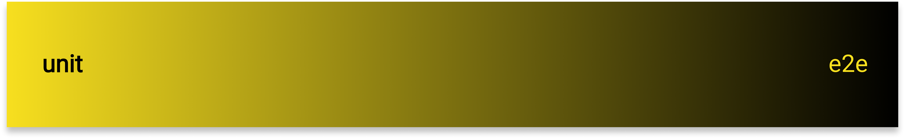

Тестируем подходы
к тестированию
Личные грабли при написании тестов разработчиком
Алексей Золотых (@zolotyh)

Тестируем подходы
к тестированию
Прописные истины
Войны в песочнице и банальные фразы в воспитанииПлан
- Про тесты вообще
- Unit
- TDD
- E2E
- BDD
- Тестовая пирамида
- Выводы
1. Про тесты
Тесты — автоматизация
Очевидное
- Автоматизация регрессии
- Поиск новых багов
- Повышение качества кода
- Документация
- Быстрая обратная связь
Неочевидное
- Понять (и простить) реквест
- Онбординг
- Разработка в изоляции
Классификация тестов
Нет никакой полной и вменяемой классификации
Какой тест модульный?
it("1 плюс 2 равно 3", () => {
expect(sum(1, 2)).toBe(3);
});
А этот модульный?
it("Поле чудес! Передаем приветы!", () => {
act(() => {
render(<Hello name="Margaret" />, container);
});
expect(container.textContent).toBe("Hello, Margaret!");
});
А этот?
test("Поле чудес! Теперь async", async () => {
render(<Fetch url="/greeting" />)
fireEvent.click(screen.getByText('Load Greeting'))
await waitFor(() => screen.getByRole('heading'))
expect(screen.getByRole('heading')).toHaveTextContent('hello there')
expect(screen.getByRole('button')).toBeDisabled()
})
Шкала
Хорошие тесты
2. Unit
Начало
Надежность и качество
Надежность и качество продукта
function isValidEmail(email) {
const re = /^.../;
return re.test(String(email).toLowerCase());
}
test("Should return true on hello@example.com", () =>
expect(isValidEmail("hello@example.com"))
.toEqual(true);
)
[
'hello@hello.com',
'superpuper@hello.com',
'blblblbl@hello.ru',
'русскоеимя@изроссии.рф',
].forEach((item) => {
test("Should return true on ${item}", () =>
expect(isValidEmail(item))
.toEqual(true);
)
});
Качество кода
Фильтрация списка
Фильтрация списка
const defaultItems = [
'react',
'angular',
'vuejs',
'svelte'
];
export const Frameworks = (items = defaultItems) => {
const [value, setValue] = useState('');
const filteredItems = items
.filter((item) => item.includes(value))
.map((item) => <li key={item}>{item}</li>);
return (
<form>
<input type="text" onChange={(e) => setValue(e.target.value)} />
{filteredItems}
</form>
);
};
Как выглядит тест
test('should work', () => {
const wrapper = shallow(<FilterForm />);
expect(wrapper.find('li').length).to.equal(4);
wrapper.find('input')
.simulate('change', {
target: {value: 'react'}
});
expect(wrapper.find('li').length).to.equal(1);
});
Что тестируем на самом деле
.filter(e => e.includes(this.state.value))
Как можно переписать
const filter = (list, value) => {
return list.filter(e => e.includes(value))
}
expect(filter(list, "react").length)
.to.equal(1);
Выделяем обособленные модули
const filter = (list, value) => {
return list.filter(e => {
if(isBlackListed(e)){
return false;
}
return e.includes(value)
})
}
jest.mock('./isBackListed');
it("...", () => {
isBlackListed.mockReturnedValue(false);
expect(filter(list, "react").length)
.to.equal(0);
})
Не тащим в аргументы ненужное
const foo = (settings) => {
const hasPermissions = settings
.profile
.permissions
.indexOf('readItems') !== -1;
...
}
const mockSettings = {
profile: {
permissions: ['readItems']
}
}
Не тащим в аргументы ненужное
const foo = ({isAbleToRead}) => {/*...*/}
Покрытие
А что говорит наука?
Покрытие и качество
-
GTAC 2015 - не связаны
youtu.be/sAfROROGujU -
GTAC 2016 - связаны
youtu.be/NKEptA3KP08
А что говорит здравый смысл?
Нужно ли покрывать?
const setUpAxios = ({ baseURL }) => {
const instanse = axios.create({ baseURL,})
axios.interceptors.response.use(on401error);
return instanse;
};
jest.mock('axios');
...
axiosInterceptorMock = jest.fn();
const mock = {
interceptors: {
response: {
push: axiosInterceptorMock,
}
}
}
axios.createInstance.mockReturnedValue(mock);
expect(axiosInterceptorMock).toHaveBeenCalled();
Вредно тестировать имплементацию!
Если контракта нет, есть смысл тестировать более высокий уровень
test('loads and displays greeting', async () => {
render(<FetchGreeting />)
userEvent.click(screen.getByText('Load Greeting'))
await screen.findByRole('heading')
expect(screen.getByRole('heading')).toHaveTextContent('hello there')
expect(screen.getByRole('button')).toHaveAttribute('disabled')
})
Требования к виджету будут изменяться реже чем требования к коду
Snapshots
it('renders correctly', () => {
const tree = renderer
.create(
<Link page="http://www.facebook.com">
Facebook
</Link>
)
.toJSON();
expect(tree).toMatchSnapshot();
});
3. TDD
TDD
- Создать тест
- Убедиться, что тест упал
- Внести изменения
- Убедиться что тест прошел
- Провести рефакторинг для устранения дублирования
TDD
- Создать тест
- Убедиться, что тест упал
- Внести изменения
- Убедиться что тест прошел
- Провести рефакторинг для устранения дублирования
Писат нужно минимально необходимый код для того, чтобы прошел тест
const sum = () => ({});
it("", () => {
expect(sum(1,2)).toEqual(3);
})
const sum = () => 3;
Плюсы
- Проработка кейсов
- Документация к пулреквесту
- Тестируемый код
- Можно рефакторить надежно
Минусы
- Требует изменения в мозгах
- Не для больших проектов
- Не для стартапов
- Смещает фокус с основной идеи
- Растет кодовая база
- Дофаминовая яма
I get paid for code that works, not for tests, so my philosophy is to test as little as possible to reach a given level of confidence...
А что говорит наука?
bit.ly/3E5IzGtThis indicates that TDD is an effective paradigm when developing small repositories but may not be particularly effective when developing larger code repositories.
Еще одно исследование
статья - bit.ly/3lYN6Co
первоисточник - bit.ly/3ufcGHe
Drawing general conclusions from empirical studies in software engineering is difficult because any process depends to a large degree on a potentially large number of relevant context variables. For this reason, we cannot assume a priori that the results of a study generalize beyond the specific environment in which it was conducted
Типы могут заменить некоторые тесты
const Foo = ({user}) => <div>{user.userrname}</div>
PropertyBased тестирование
youtu.be/H-cBhNMxlCwНизкоуровневые тесты. Выводы
- Полезны
- Покрытие — доверяй, но проверяй
- Работает ли приложение?
- Тестируйте контракт
- Не тестируйте все подряд
Как делаю я
- Сначала проектирую
- Тесты вперед, но не TDD
- Использую Wallaby.js
- Нет контракта - повышаю уровень
- Тесты на бизнес логику
- Тесты на регулярки и алгоритмы
- Использую типизацию
- Удаляю снэпшоты
4. E2E
История 1
Сначала были написаны тест кейсы, потом автоматизация
Результаты
- надежно
- много мигающих тестов
- большой объем работы
- в целом довольный бизнес
- расходы на поддержку
- не все возможно покрыть
История 2
Все тестировалось сразу, тесты были частью задач
Помните?
test("Should return true on hello@example.com", () =>
expect(isValidEmail("hello@example.com"))
.toEqual(true);
)
А давайте из него сделаем E2E
Достоинства
- Онбординг
- Надежность
- Вовлеченность в бизнес
Недостатки
- Дорого
- Долго
- Не замена unit
- Никак не проверяет качество кода
- Тесты не удаляются
- Не все кейсы покрыты
5. BDD
BDD
BDD !== TDD
Я
- Использую playwright
- Мокаю сервер
- Проверяю только то, что не проверил unit
- Учусь у QA
- Были бы ресурсы, нанял бы QA + QA automation
Выводы
- E2E - полезны
- QA нужны
- Настоящие E2E - единороги
- Не нужно относиться как к Unit
6. Тестовая пирамида
О соотношении тестов в проекте

О соотношении тестов в проекте
7. Вместо вывода
- Размер кодовой базы
- Размер команды
- Планы бизнеса
- Библиотека или приложение
- Микросервисы или монолит
- Бюджет на тестирование
Спасибо!
| twitter.com/zolotyh | |
| telegram | t.me/zolotyh |